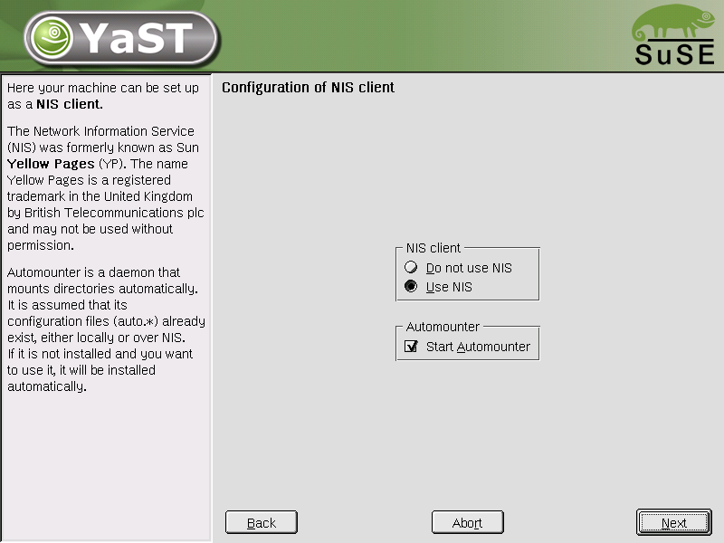
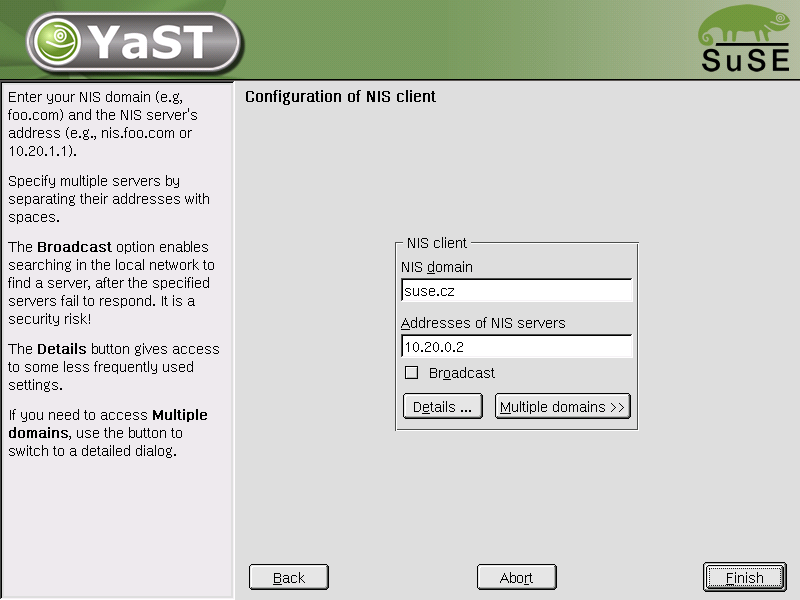
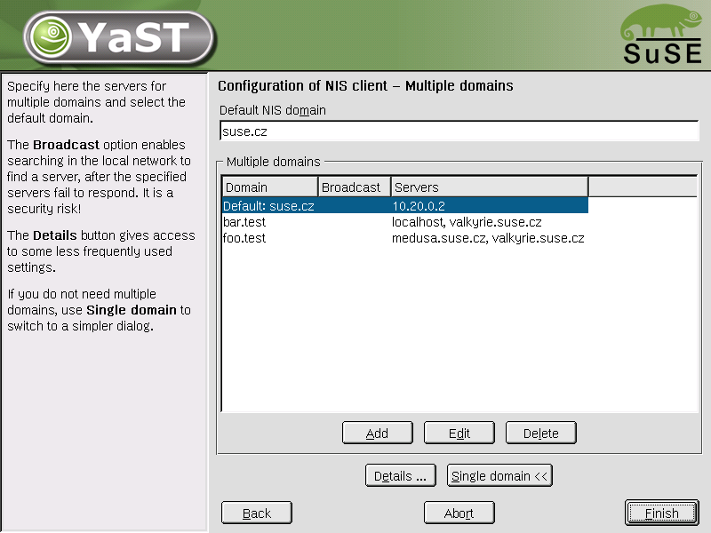
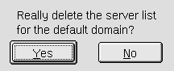
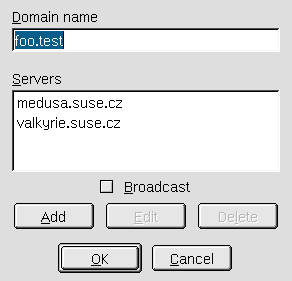
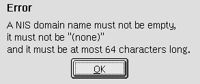
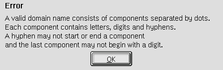
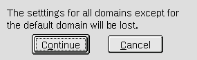
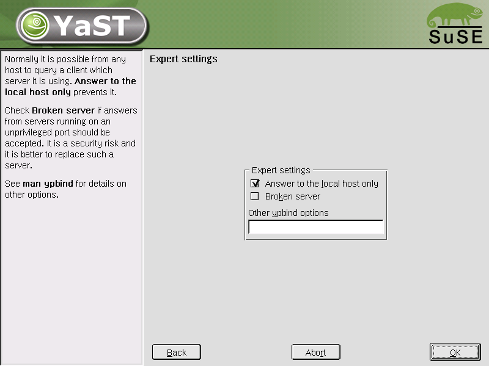
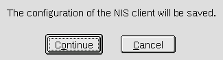

The NIS client config module manages /etc/yp.conf, /etc/defaultdomain, the relevant variables in /etc/sysconfig/ypbind and starts and stops the necessary init scripts: ypbind and portmap.
The help text and the input box label mention multiple servers. See bug #9559.
Added a quick automounter switch See bug #6092.
Added a Details dialog. See bug #15666.
Added a Multiple domains dialog See bug #15665.
(Configuration over DHCP postponed.)



Delete:


Add/Edit:


Add/Edit server:


Switching from the multiple domain dialog to the single domain dialog:


